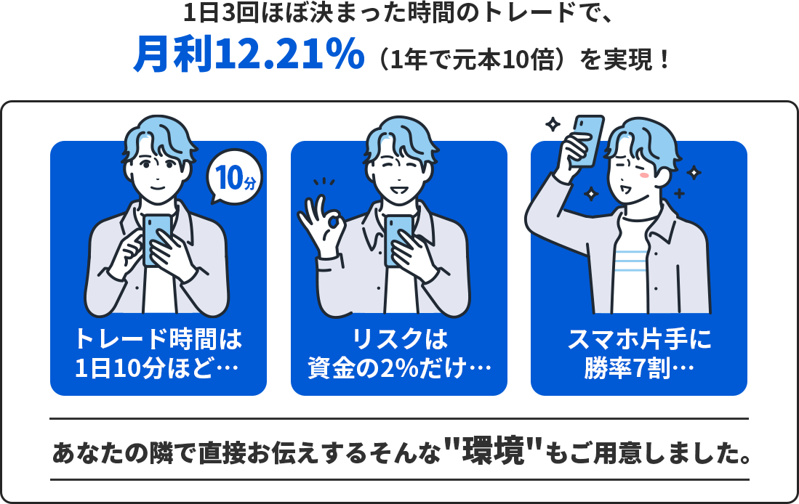
このページは期間限定の特設ページです。
※期日になりましたら募集を終了します。
です！ご不明な点があれば、
お気軽にお問い合わせください
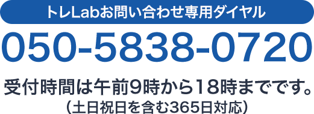
※混雑時には繋がらない場合がございます。
時間をおいて再度おかけ直しください
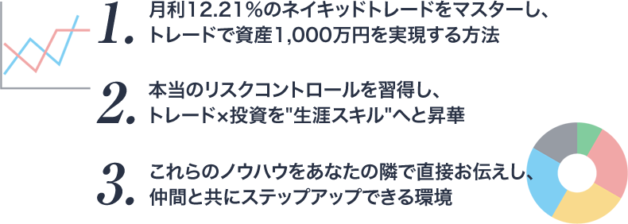
実需を元に方向性を判定する「アルゴシステム」をベースに、出来高から売買ポイントを見極める裁量を取り入れたネイキッドトレードをマスターしていただきます。
1〜2ヶ月もあれば基礎はマスターして頂けるので、並行してライブ配信や動画による「ケーススタディ」をお届けしつつ、応用も効くレベルへと昇華していただきます。
トレLabではこのネイキッドトレードを「生涯スキル」のベースとして習得していただきます。
本来トレードなんてものは「上がるか下がるか？」という２者択一の勝率50％のゲームですから「大きく負ける」なんてことはあり得ないはずなんです。
しかしそれでも負ける人が後を絶たないのは「原理原則」を理解していないから。
また、勝っているはずなのに「大きく伸ばせない」のも、この原理原則を知らないからです。
そこでトレLabでは、投資やトレードにおける「原理原則」をイチから学んでいただきます。
マネーマネジメントを含む「リスクコントロール」という概念を身につけることで、大きく負けることを無くして大きく勝つ方法を「理論」として習得していただきます。
学んだトレードスキルや原理原則を「習得」するには実践が必要ですが、その実践を進めていく際に「無駄な工程」はツールやシステムで簡略化し、大変だけど「必要な工程」はきちんと身につく形で進められる・・・そんな「設備」もご用意しています。
例えば、原理原則の１つであるポジションサイジングで「ロット計算」を行う際はツールでサクッと計算できるようにしたり、自分自身のクセを把握する為に「トレード日記」をつける際は、売買記録を簡単に分析できるシステムを使えたり・・・
こういった各種設備をご用意していますし、必要であればドンドン充実させていきますので、トレLabという環境があれば他に何もいらない！というレベルを目指していきます。
基本的には「トレード」という生涯スキルを身に着けていただくことが最初の目標ですが、資産1,000万円を超えてからはトレード単体よりも「投資」を組み合わせるほうが資産形成は安定します。
それに「投資」の方が時間的な余裕も生みやすいので、お金だけではなく「人生を楽しむ」というトレLabの目的の為にも、トレードのその先・・・投資に関する知識や原理原則もお伝えしていきます。
トレラボでは「脱落者ゼロ」を目標にしていますので、できる限りの環境を整備しています。
リアルやオンラインでの勉強会もそうですが、いつでもご質問頂ける電話やチャットによるサポートもその一環。
また、僕とあなたの関係が先生と生徒だとするなら、トレラボの仲間たちは先輩と後輩、ライバルや友人ですから、皆で成長していくための環境にも力を入れています。
１人はみんなの為に。みんなは１人の為に。
これを実現する環境をお届けします。
最初の２ヶ月間は実践よりも学習に時間を割いていただきます。
自動車教習所で言うところの「学科」みたいなものですが、何をするにも学習という工程は非常に重要なので、まずは知識のインプットから徹底的に進めていただきます。
この段階で「これで合ってるのか？」という疑問も生まれてきますが、それも僕からお届けするリアルタイムな「ケーススタディ」で答え合わせをして頂けますので、合っているかどうかの不安も「大丈夫！合ってるぞ！」という確信へと変えて頂けます。
ベースの学習が終わったら次は実践編です。
自動車教習所で言うところの「実技」ですが、ここでは「デモ口座」もしくは「小資金口座」を使って実際にトレードして頂きます。
並行してトレード結果の分析なども行って頂きますので、ご自身の得意とする場面や苦手な状況なども把握して頂きつつ、勉強会やケーススタディを通じて学習から「習得する」というフェーズにはいって頂きます。
ネイキッドは他のトレードノウハウと比べて「シンプルで分かりやすい」という特徴があるので、この「習得する」という工程も進みが早い分「楽しんで」習得して頂けると思います。
ネイキッドの習得が進めば「本番」へ移行していただきます。自動車教習所を卒業し「初心者」として公道に出るターンですね。
早ければ第２ステップ途中でこの工程に進んでいただきますが、遅くとも半年で学校期間は卒業して一人前のトレーダーとして社会に出ていただきます。
しかし同時に、まだまだ初心者ですしトレードのその先（投資）への工程も残っていますし・・・何より「人生を楽しむ」という本来の目的があります。
ですからあなたが望む限りはずっと一緒に、高みを目指したり、新しいトレードノウハウを研究したり、一緒に遊んだりしつつ、大人のキャンパスライフを満喫していきたいと考えています。
| エントリー | エグジット | |
|---|---|---|
| アルゴ_Tokyo | 9時55分（冬時間:同じ） | 12時30分〜14時（冬時間:同じ） |
| アルゴ_London7 | 15時（冬時間:16時） | 16時〜17時（冬時間:17時or18時） |
| アルゴ_London8 | 16時or17時（冬時間:17時or18時） | 17時〜21時（冬時間:18時or22時） |
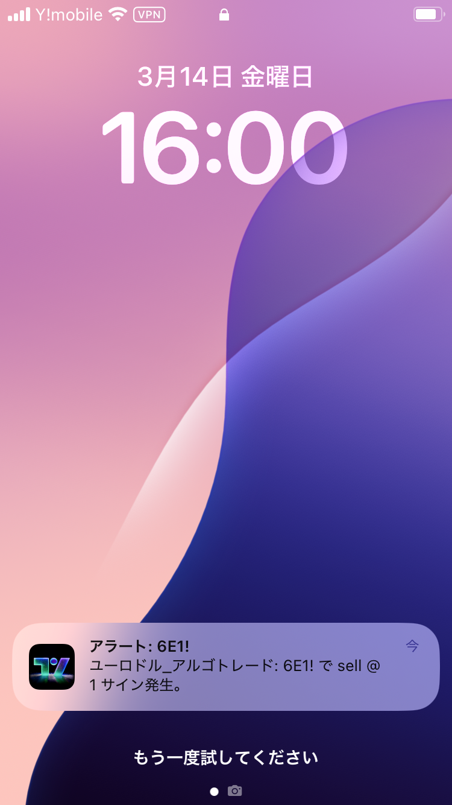
実需から相場の方向性を割り出し、出来高を元に売買（トレード）する手法
実需（実体経済）を元にしているので上がるか下がるかの方向性を割り出す精度は高く、出来高という「実際に取引が実現した価格の信憑性」を元にした裁量トレードも、一般的なテクニカル分析と比べると非常に精度が高く、かつ「シンプルで人による差が出にくい」という特徴があります。
ネイキッドトレードにおけるトレードチャンスは「最大で１日３回」だけで、その３回もおおむね「時間が決まっている」トレードとなります。
午前9時55分と15時と16時or17時（冬時間は9時55分と16時と17時or18時）の３回で、エントリーした後は狙った売買ポイント（損切りや利食い）にタッチしなくても、それぞれ2～3時間でトレード終了となります。
つまり、絶対に「日をまたがない」ので、仮に損切り（ロスカット）を入れ忘れていたとしても、時間になれば必ず決済を行うことになるので急激な価格変動に強いトレード方法です。
様々な通貨ペアを監視してチャンスを見つけるテクニカル分析の王道手法と違い、ネイキッドトレードでは「ユーロドルのみ」しかトレードしません。
ユーロドルの組み合わせが最もマーケットが大きく安定しているので、「マーケットインパクト」と呼ばれる予想外の出来事（不測の事態）が起こりにくい通貨ペアだからですね。
それはつまり、実需を元にしたネイキッドトレードに最も適した通貨ペアだということでもあります。
また、１つの通貨ペアしか監視しないので、結果的にシンプルでストレスも少ない…という副次的なメリットもあります。
これは厳密に言うなら「日本のFX業者」を使う場合の最低資金です。
ネイキッドトレードの成績とリスクマネジメントの観点から、国内業者の場合は「元本７万円に対して１万通貨（1Lot）」であれば、安心してトレードして頂けます。
海外業者であれば、業者による違いが大きいので一概に言えませんが、恐らく３～５万円くらいが最低資金になるかと思います。
こちらに関しては特に説明は不要だと思いますが、要は過去の実績上、元本100万円でトレードしたら１ヶ月で平均112万円になったということです。
また、月利で10％をこえる数字は「トレードにおける最大レベル」だとお考え頂いて間違いありません。
あまりにも大きな利回りを生む方法は「一時的な歪」が原因の場合が多く、長続きしないのが現実なので。
トレード回数の少ないスイングトレードや長期トレードではなく、デイトレードという短期トレードの手法において勝率が約７割というのは「相当高い勝率」だと思って頂いて間違いありません。
勝率が高いとメンタル面も安定しやすいという副次的なメリットもありますので、個人的には「極端な損小利大」を狙って勝率を犠牲にする手法より、少なくとも損小利大を維持したうえで高勝率を担保できるネイキッドトレードが好みですしオススメしやすいです。
ご存知だと思いますがリスクリワードとは、負けた時の平均損失を「１」とした場合、勝った時の平均利益がいくらか？を示す指標です。
この指標が「１：１」で勝率が50％を超えていれば「優位性がある」とみなすことが出来るわけですが、ネイキッドトレードでは勝率が約７割に対してリスクリワードレシオは「1：1.48」です。
これは、月間平均トレード回数が18回というネイキッドトレードの場合、5回負けて13回勝つ…という勝率で、1回の負けに対して仮に1万円負けるとした場合、勝つ時は約1万5千円ほどの利益が出るということ。
つまり、
負け：１万円×５回＝５万円
勝ち：１.５万円×１３回＝１９.５万円
利益：１９.５万円－５万円＝１４.５万円
という事になります。
こちらの指標もご存知の方が大半だとは思いますが、総利益と総損失の比率（バランス）を表す指標です。
トレード戦略における性能評価に用いられる指標で、「総利益 ÷ 総損失」という計算でもとめられ、「１」以上の数字になれば「優位性がある」と認められます。
その上で、ネイキッドトレードの「3.39」という数字は「かなり高い」とお考え頂いて間違いありません。
この平均18回という数字は、実際に僕がトレードした回数で出していますが、気分で休んだり、あえて休憩期間を設けていたりしている期間も含んでいるので、本気で集中してトレードすればもっと回数は増えると思います。
あくまで僕の肌感覚（主観）にはなりますが、平均すると１日１回～２回くらい、月間にして２５回くらいはトレードチャンスがあると思います。
その上で、月間２５回でも「デイトレ」という意味では多くはありませんが、勝てる時にだけトレードする・・・という意味では、これくらいが丁度良いと思っております。
ネイキッドトレードでは「買いか売りかの方向性」は、アルゴシステムというサインツールを使用します。
それ以外にも出来高を把握するインジケーターや平均出来高を表示するV-wapというインジケーターなど、多くの方にとって馴染みのないインジケーターを使用しますが、使い方は非常にシンプルなので慣れるのも早いと思います。
| 年月 | pips | トレード回数 | 勝率 | プロフィット ファクター |
リスクリワード |
|---|---|---|---|---|---|
| 2023年8月 | 0 | - | - | - | - |
| 2023年9月 | 131.3 | 19 | 73.68% | 6.23 | 2.23 |
| 2023年10月 | 68.7 | 19 | 47.37 | 2.77 | 3.07 |
| 2023年11月 | 65.4 | 24 | 62.50% | 2.45 | 1.47 |
| 2023年12月 | 125.5 | 22 | 81.82% | 10.96 | 2.44 |
| 2023年合計 | 390.9 | 84 | 66.67% | 4.21 | 2.24 |
| 2024年1月 | 69.2 | 22 | 68.18% | 3.24 | 1.51 |
| 2024年2月 | 65.2 | 20 | 75.00% | 3.79 | 1.26 |
| 2024年3月 | 72.8 | 15 | 93.33% | 49.53 | 3.54 |
| 2024年4月 | 17.2 | 29 | 62.07% | 1.32 | 0.81 |
| 2024年5月 | 77.2 | 20 | 75.00% | 7.03 | 2.34 |
| 2024年6月 | 25.3 | 13 | 53.85% | 2.30 | 1.97 |
| 2024年7月 | 50.9 | 19 | 63.16% | 2.41 | 1.41 |
| 2024年8月 | 30.3 | 18 | 66.67% | 1.90 | 0.95 |
| 2024年9月 | 53.9 | 15 | 66.67% | 3.22 | 1.61 |
| 2024年10月 | 24.2 | 15 | 80.00% | 4.18 | 1.05 |
| 2024年11月 | 18.6 | 5 | 80.00% | 4.00 | 1.00 |
| 2024年12月 | 15.4 | 14 | 64.29% | 2.86 | 1.59 |
| 2024年合計 | 520.2 | 205 | 69.76% | 3.02 | 1.40 |
| 2025年1月 | 33.4 | 20 | 80.00% | 5.28 | 1.32 |
| 2025年2月 | 22.1 | 17 | 70.59% | 2.32 | 0.96 |
| 2025年3月 | - | - | - | - | - |
| 2025年4月 | 68.8 | 12 | 75.00% | 4.98 | 1.66 |
| 2025年5月 | - | - | - | - | - |
| 2025年6月 | - | - | - | - | - |
| 2025年7月 | 64.4 | 10 | 90.00% | 8.08 | 0.9 |
| 2025年8月 | 49.9 | 24 | 79.17% | 3.19 | 0.84 |
| 収録期間 | 1/17〜2/20 |
|---|---|
| 取引回数 | 27回 |
| 勝率 | 77.8% |
| PF | 3.29 |
| 利益 | 727,189円 |
| 利回り | 10.39% ※推奨元本での計算 |
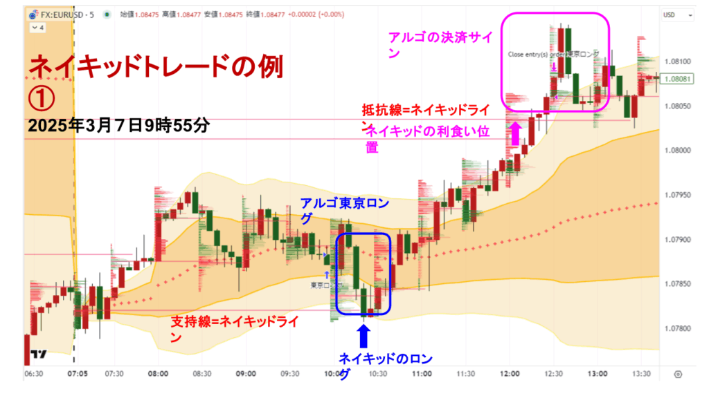
まずはアルゴシステムで「東京ロング」というサインが出ます。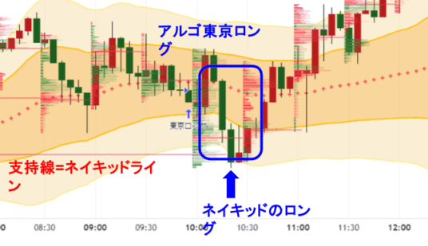
その後、順調に上昇していって12時10分と12時15分のローソク足で、次のネイキッドライン（抵抗線＝レジスタンス」）にタッチしますが、ここで決済（利確＝イグジット）となります。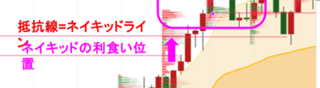
その後、12時30分の時点で「アルゴシステム」でも決済サインが出ていますが、すでにネイキッドラインにタッチして決済済なのでスルーで問題ありません。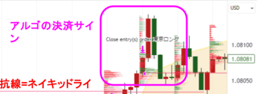
仮に、抵抗線となるネイキッドラインにタッチしないまま、アルゴシステムの決済サインが出た場合は、決済サインに従って「クローズ（決済）」します。その時点で利益が出ていても損失が出ていたとしても、どちらの場合でもクローズとなります。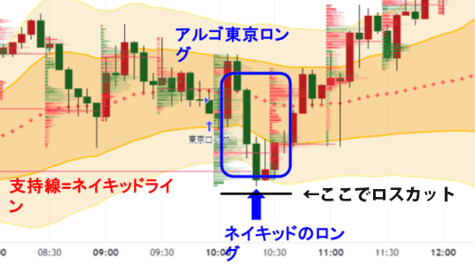
はい。これは１つの事例ではありますが、基本的にネイキッドトレードにおける裁量は「非常にシンプル」で「主観による違い（直近高値とは？など）」がほとんど無いのが特徴です。※「▶」クリックで詳細が表示されます
| 年月 | pips | トレード回数 | 勝率 | プロフィット ファクター |
リスクリワード |
|---|---|---|---|---|---|
| 2016年1月 | 222.3 | 21 | 66.67% | 5.97 | 2.99 |
| 2016年2月 | 50.3 | 29 | 58.62% | 1.25 | 0.88 |
| 2016年3月 | -8.9 | 27 | 59.26% | 0.94 | 0.65 |
| 2016年4月 | 116.7 | 33 | 63.64% | 1.91 | 1.09 |
| 2016年5月 | 38.1 | 31 | 58.06% | 1.27 | 0.92 |
| 2016年6月 | 171.6 | 31 | 74.19% | 3.03 | 1.05 |
| 2016年7月 | 92.3 | 32 | 65.63% | 1.99 | 1.04 |
| 2016年8月 | 67.2 | 37 | 59.46% | 1.61 | 1.10 |
| 2016年9月 | 20.9 | 31 | 64.52% | 1.24 | 0.68 |
| 2016年10月 | -25.2 | 28 | 39.29% | 0.79 | 1.22 |
| 2016年11月 | -13.3 | 27 | 44.44% | 0.94 | 1.17 |
| 2016年12月 | 175.1 | 30 | 70.00% | 3.25 | 1.39 |
| 2016年合計 | 907.1 | 357 | 60.50% | 1.63 | 1.10 |
| 年月 | pips | トレード回数 | 勝率 | プロフィット ファクター |
リスクリワード |
|---|---|---|---|---|---|
| 2017年1月 | -27.8 | 37 | 51.35% | 0.88 | 0.83 |
| 2017年2月 | -15.2 | 28 | 50.00% | 0.88 | 0.88 |
| 2017年3月 | 104.2 | 40 | 57.50% | 1.74 | 1.29 |
| 2017年4月 | -12.3 | 28 | 35.71% | 0.89 | 1.60 |
| 2017年5月 | 109.6 | 33 | 54.55% | 2.32 | 1.93 |
| 2017年6月 | 98.8 | 34 | 58.82% | 1.74 | 1.22 |
| 2017年7月 | -13.2 | 37 | 54.05% | 0.94 | 0.80 |
| 2017年8月 | 70.5 | 35 | 62.86% | 1.63 | 0.96 |
| 2017年9月 | -47.7 | 36 | 44.44% | 0.79 | 0.99 |
| 2017年10月 | 46.4 | 37 | 51.35% | 1.27 | 1.20 |
| 2017年11月 | 138.5 | 34 | 76.47% | 2.39 | 0.73 |
| 2017年12月 | 83.3 | 30 | 53.33% | 2.86 | 2.50 |
| 2017年合計 | 535.1 | 409 | 54.52% | 1.32 | 1.10 |
| 年月 | pips | トレード回数 | 勝率 | プロフィット ファクター |
リスクリワード |
|---|---|---|---|---|---|
| 2018年1月 | 45.5 | 30 | 46.67% | 1.25 | 1.43 |
| 2018年2月 | 54.3 | 33 | 54.55% | 1.30 | 1.09 |
| 2018年3月 | 160.7 | 32 | 56.25% | 2.92 | 2.27 |
| 2018年4月 | 149.5 | 32 | 65.63% | 3.40 | 1.78 |
| 2018年5月 | 136.9 | 28 | 60.71% | 2.00 | 1.30 |
| 2018年6月 | -44.4 | 35 | 45.71% | 0.85 | 1.00 |
| 2018年7月 | 43.5 | 31 | 54.84% | 1.36 | 1.12 |
| 2018年8月 | 20.5 | 29 | 58.62% | 1.17 | 0.83 |
| 2018年9月 | 85.9 | 33 | 63.64% | 1.79 | 0.99 |
| 2018年10月 | 40.7 | 36 | 55.56% | 1.24 | 0.99 |
| 2018年11月 | 13.8 | 33 | 51.52% | 1.09 | 1.02 |
| 2018年12月 | 70.6 | 24 | 62.50% | 1.59 | 0.95 |
| 2018年合計 | 777.5 | 376 | 56.12% | 1.45 | 1.17 |
| 年月 | pips | トレード回数 | 勝率 | プロフィット ファクター |
リスクリワード |
|---|---|---|---|---|---|
| 2019年1月 | -33.0 | 36 | 52.78% | 0.81 | 0.72 |
| 2019年2月 | 64.2 | 26 | 69.23% | 2.03 | 0.90 |
| 2019年3月 | -26.6 | 30 | 46.67% | 0.79 | 0.90 |
| 2019年4月 | 61.2 | 28 | 53.57% | 1.95 | 1.69 |
| 2019年5月 | 27.5 | 28 | 53.57% | 1.42 | 1.23 |
| 2019年6月 | 7.3 | 32 | 53.13% | 1.08 | 0.95 |
| 2019年7月 | 41.0 | 36 | 52.78% | 1.85 | 1.65 |
| 2019年8月 | -78.6 | 31 | 41.94% | 0.48 | 0.67 |
| 2019年9月 | 63.6 | 27 | 55.56% | 1.87 | 1.49 |
| 2019年10月 | -25.4 | 36 | 38.89% | 0.80 | 1.26 |
| 2019年11月 | 81.5 | 28 | 64.29% | 2.49 | 1.38 |
| 2019年12月 | 24.2 | 24 | 66.67% | 1.48 | 0.74 |
| 2019年合計 | 206.9 | 362 | 53.31% | 1.19 | 1.05 |
| 年月 | pips | トレード回数 | 勝率 | プロフィット ファクター |
リスクリワード |
|---|---|---|---|---|---|
| 2020年1月 | 9.0 | 19 | 47.37% | 1.28 | 1.43 |
| 2020年2月 | -37.1 | 27 | 40.74% | 0.58 | 0.84 |
| 2020年3月 | 238.3 | 27 | 66.67% | 2.43 | 1.21 |
| 2020年4月 | -89.0 | 26 | 50.00% | 0.60 | 0.60 |
| 2020年5月 | 104.3 | 37 | 64.86% | 1.94 | 1.05 |
| 2020年6月 | 108.4 | 34 | 55.88% | 1.97 | 1.55 |
| 2020年7月 | 79.2 | 36 | 55.56% | 1.61 | 1.29 |
| 2020年8月 | 43.7 | 29 | 65.52% | 1.33 | 0.70 |
| 2020年9月 | 154.9 | 34 | 55.88% | 2.63 | 2.08 |
| 2020年10月 | 61.4 | 34 | 47.06% | 1.39 | 1.57 |
| 2020年11月 | -64.2 | 35 | 54.29% | 0.77 | 0.65 |
| 2020年12月 | 65.6 | 40 | 55.00% | 1.34 | 1.09 |
| 2020年合計 | 674.5 | 378 | 55.29% | 1.39 | 1.06 |
| 年月 | pips | トレード回数 | 勝率 | プロフィット ファクター |
リスクリワード |
|---|---|---|---|---|---|
| 2021年1月 | 40.2 | 32 | 56.25% | 1.24 | 0.96 |
| 2021年2月 | 135.2 | 30 | 73.33% | 2.86 | 1.04 |
| 2021年3月 | 27.6 | 30 | 53.33% | 1.15 | 1.01 |
| 2021年4月 | 70.6 | 35 | 51.43% | 1.56 | 1.47 |
| 2021年5月 | -6.3 | 31 | 45.16% | 0.96 | 1.16 |
| 2021年6月 | 29.1 | 27 | 55.56% | 1.39 | 1.11 |
| 2021年7月 | 11.8 | 35 | 51.43% | 1.10 | 1.03 |
| 2021年8月 | 94.8 | 35 | 57.14% | 3.23 | 2.42 |
| 2021年9月 | -12.0 | 25 | 52.00% | 0.85 | 0. 78 |
| 2021年10月 | 7.2 | 27 | 44.44% | 1.07 | 1.34 |
| 2021年11月 | 60.6 | 36 | 61.11% | 1.40 | 0.89 |
| 2021年12月 | 225.2 | 32 | 65.63% | 4.39 | 2.30 |
| 2021年合計 | 684.0 | 375 | 55.73% | 1.51 | 1.18 |
| 年月 | pips | トレード回数 | 勝率 | プロフィット ファクター |
リスクリワード |
|---|---|---|---|---|---|
| 2022年1月 | 37.6 | 30 | 56.67% | 1.34 | 1.03 |
| 2022年2月 | 183.2 | 28 | 64.29% | 3.22 | 1.79 |
| 2022年3月 | 197.3 | 32 | 65.63% | 2.63 | 1.38 |
| 2022年4月 | 197.3 | 31 | 48.39% | 1.18 | 1.26 |
| 2022年5月 | -66.1 | 28 | 50.00% | 0.72 | 0.72 |
| 2022年6月 | 207.3 | 39 | 71.79% | 2.75 | 1.08 |
| 2022年7月 | 186.9 | 31 | 77.42% | 2.21 | 0.64 |
| 2022年8月 | -22.7 | 33 | 51.52% | 0.90 | 0.85 |
| 2022年9月 | 118.7 | 25 | 60.00% | 2.17 | 1.44 |
| 2022年10月 | 98.9 | 31 | 58.06% | 1.73 | 1.25 |
| 2022年11月 | -23.9 | 27 | 48.15% | 0.87 | 0.94 |
| 2022年12月 | 64.9 | 32 | 53.13% | 1.41 | 1.24 |
| 2022年合計 | 1017.4 | 367 | 59.13% | 1.56 | 1.06 |
| 年月 | pips | トレード回数 | 勝率 | プロフィット ファクター |
リスクリワード |
|---|---|---|---|---|---|
| 2023年1月 | 105.3 | 28 | 64.29% | 2.20 | 1.22 |
| 2023年2月 | 61.4 | 22 | 54.55% | 1.87 | 1.56 |
| 2023年3月 | 38.3 | 33 | 51.52% | 1.22 | 1.15 |
| 2023年4月 | 41.2 | 31 | 58.06% | 1.32 | 0.95 |
| 2023年5月 | 118.1 | 25 | 64.00% | 2.83 | 1.59 |
| 2023年6月 | 34.1 | 38 | 60.53% | 1.27 | 0.83 |
| 2023年7月 | 68.9 | 32 | 56.25% | 1.70 | 1.33 |
| 2023年8月 | 59.5 | 28 | 60.71% | 1.48 | 0.96 |
| 2023年9月 | 89.6 | 25 | 64.00% | 2.20 | 1.24 |
| 2023年10月 | -12.3 | 28 | 35.71% | 0.90 | 1.63 |
| 2023年11月 | 49.2 | 32 | 50.00% | 1.46 | 1.46 |
| 2023年12月 | 74.6 | 31 | 58.06% | 1.86 | 1.34 |
| 2023年合計 | 727.9 | 353 | 56.37% | 1.57 | 1.24 |
| 年月 | pips | トレード回数 | 勝率 | プロフィット ファクター |
リスクリワード |
|---|---|---|---|---|---|
| 2024年1月 | -96.9 | 25 | 44.00% | 0.44 | 0.56 |
| 2024年2月 | 60.0 | 26 | 69.23% | 1.89 | 0.84 |
| 2024年3月 | 24.8 | 27 | 48.15% | 1.28 | 1.38 |
| 2024年4月 | 28.0 | 24 | 50.00% | 1.36 | 1.36 |
| 2024年5月 | 7.6 | 40 | 50.00% | 1.06 | 1.06 |
| 2024年6月 | 44.5 | 29 | 65.52% | 1.55 | 0.82 |
| 2024年7月 | 54.2 | 32 | 50.00% | 1.65 | 1.65 |
| 2024年8月 | 72.7 | 34 | 58.82% | 1.88 | 1.32 |
| 2024年9月 | 105.1 | 31 | 77.42% | 2.88 | 0.84 |
| 2024年10月 | 16.7 | 28 | 50.00% | 1.23 | 1.23 |
| 2024年11月 | 63.3 | 25 | 60.00% | 1.51 | 1.00 |
| 2024年12月 | -96.7 | 29 | 44.83% | 0.47 | 0.58 |
| 2024年合計 | 283.3 | 350 | 55.71% | 1.23 | 0.97 |
| 年月 | pips | トレード回数 | 勝率 | プロフィット ファクター |
リスクリワード |
|---|---|---|---|---|---|
| 2025年1月 | 100.1 | 29 | 58.62% | 2.01 | 1.42 |
| 2025年2月 | 122.7 | 38 | 60.53% | 2.18 | 1.42 |
| 2025年3月 | 173.7 | 33 | 57.58% | 2.39 | 1.76 |
| 2025年4月 | -95.4 | 33 | 51.52% | 0.74 | 0.7 |
| 2025年5月 | 11.7 | 36 | 47.22% | 1.06 | 1.18 |
| 2025年6月 | -20.5 | 31 | 45.16% | 0.89 | 1.08 |
| 2025年7月 | 131.3 | 27 | 74.07% | 4.38 | 1.53 |
| 2025年8月 | 50.7 | 34 | 58.82% | 1.35 | 0.94 |
| 2025年9月 | |||||
| 2025年10月 | |||||
| 2025年11月 | |||||
| 2025年12月 | |||||
| 2025年合計 | 474.3 | 261 | 56.32% | 1.37 | 1.06 |
| 自分自身の特性を把握すること。要は「どこにストレスを感じやすいか？」を知ること。例えば「ショートに弱い」とか、連敗の方が精神的なダメージが大きいか一撃の損失が大きい方が精神的ダメージが大きいか？とか、自分のタイプを把握した上でトレードスタイルに織り込むことの重要性 | |
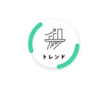 |
ダウ理論を含めた相場の特性の話で、トレードの大原則として「トレンド（方向性）に沿った思考をする」という考え方のことです。ネイキッドでいえばアルゴシステムは特にこのトレンド（方向性）を意識している部分となります。 |
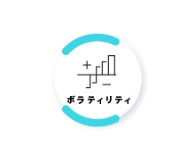 |
相場の変動幅の変動率のこと。要は「どのくらい相場が動いているか」という話。上にも下にも大きく動いている時はボラティリティが高く、逆にレンジ相場（一定の範囲を行ったり来たりしている時）の時はボラティリティが低い場合が多い。 ボラティリティに応じて利幅や損切りも変動させる必要があるので、固定pipsで売買ポイントを決めるのはハイリスク。 |
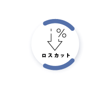 |
プロスペクト理論のこと。人は利益は早く確定させたがるが損失の確定は怖がって先延ばしにする。だから小さく勝って大きく負けることになる。つまり損切りはルールにそって「機械的に」行う必要がある。これを徹底しない人が「大きく負ける」を経験することになる。 |
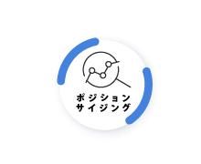 |
マネーマネジメント（複利×ポジションサイズ）のこと。トレードノウハウ（エッジ）に応じてバルサラの破産確率などから取引量の割合（資金率）を定め、ロスカット幅に応じたポジションサイズ（取引量）を決定し、これらを「毎トレード」ごとに行う（複利）ことで「損失は小さく利益は大きく」することができる。 |
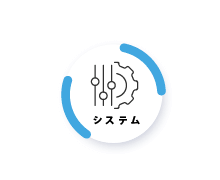 |
物理的なシステムではなく、上記１～５を自分にあった形で適切に「組み合わせる」という考え方。例えば「４」のロスカットにおけるルールとは、「５」のポジションサイジングと密接に関係する。 ロスカット幅（pips）はトレードノウハウ（エッジ）によっても「３」のボラティリティによっても異なるし、ロスカット金額（負け額）はポジションサイズ（資金率）によっても「１」のマインドによっても異なる・・・など。 |
| ネイキッドトレード | 何度も繰り返しお伝えしてきた僕のトレーダー人生の終着点。それがネイキッドトレード。 実需を元に方向性を判断するアルゴシステムでサインを出し、そのサインに合わせて「どこでエントリーし、どこで決済（利確 or 損切り）するか？」を判断する裁量ノウハウ。 これらを25回のビデオ講座で徹底解説しています。 ペースとしては週に2回のビデオを進めて頂ければ２ヶ月でマスターできるペースですが、毎日1コマずつ進めて１ヶ月でマスターすることももちろん可能。 あなたのペースで学習を進めてしっかりマスターしてください！ 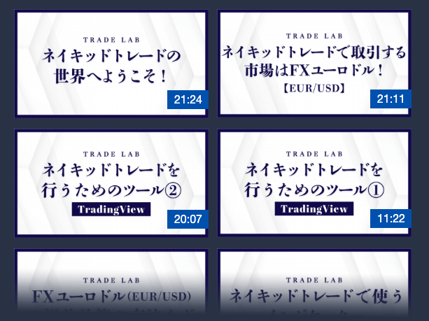 |
||||||||||||
|---|---|---|---|---|---|---|---|---|---|---|---|---|---|
| アルゴシステム | 実需を元に方向性（上がるか下がるか？）を判断し、サイン（シグナル）で通知してくれるシステムです。 「トレーディングビュー」というチャートシステムで稼働するシステムですが、パソコンだけでなく「スマホ」にも通知を出してくれるので、外出先でも見逃すことはありません。 また、ネイキッドのノウハウはシンプルなので「スマホでトレード」することも当然可能なので、仕事の合間にサインを確認してトイレでサクッとトレード・・・なんてことも可能です。（利確or損切りも指値で予約可能） アルゴのサインは毎日必ず出るわけではありませんが、１日最大で３回出ます。
※ブラウザシステムなのでMAC(マック)やスマホにも対応しています。
※トレLab退会後も「月額5,500円(税込)～」にて継続的にご利用頂けます。 |
||||||||||||
| 相乗りチャート | ネイキッドトレードのコンセプトは「大きな流れに相乗りする事」です。 実需と呼ばれる「実体経済の流れ」であったり、その実体経済の流れに合わせて動く機関投資家であったり、こういった「強者」に逆らわずに相乗りしていくことが僕達「弱者の戦略」だと考えているからです。 こういった考えを反映した僕のトレードを再現する為のチャート設定を「相乗りチャート」と呼んでいて、あなたには実際に僕が使っているチャートを、システムやツール（インジケーター）、各種設定など全て含めて丸っとそのままご提供します。 アルゴは当然のことながら、裁量ノウハウのキモとなる「ネイキッドライン」や「V-wap」などのインジケーターも全てなので、相乗りチャートがあれば僕と「全く同じ環境」でトレードして頂けます。 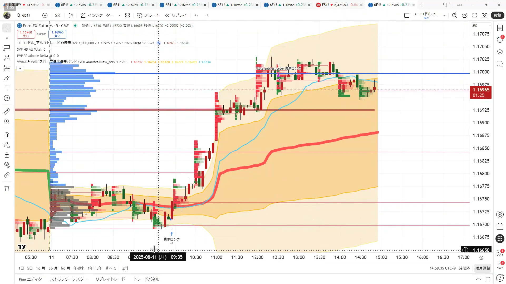 |
||||||||||||
| リスクコントロール | ロジックやエッジ（ネイキッドトレードなど）はトレードにおいて「攻め」を担う役割ですが、リスクコントロールは原則的には「守り」を担う役割です。 もちろん、ポジションサイジング（資金管理）を筆頭に「攻守ともに」という考え方も多数ありますが、前提としてはあくまで「守り」の要が、原理原則とも言えるリスクコントロールなんですね。 ですからリスクコントロールをマスターすることはトレードにおける「命綱」を結ぶことと同義なので、こちらも「ビデオ講座によるカリキュラム」で完璧にマスターして頂きます。 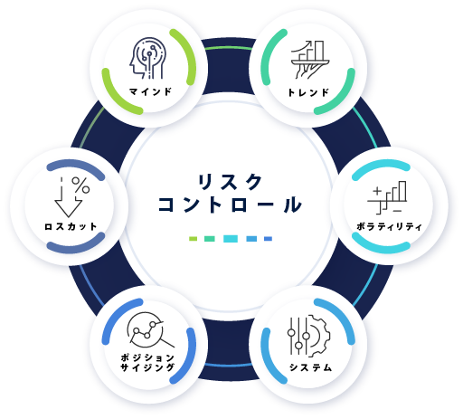 |
||||||||||||
| 増え続けるケーススタディ | ネイキッドトレードやリスクコントロールのビデオ講座で「カリキュラム」は全てカバーしていて、カリキュラムが完了すればベースとしてのトレードはマスターして頂けている状態です。 とは言え、不測の事態や想定外のこと、微妙に判断に迷うシーンなんかもあるかと思いますので、実際のトレードシーンを解説した「解説動画＝ケーススタディ」を”常に”ご提供し続けます。 つまり、あらゆるシーンを網羅していくことになりますので、判断に迷う場合にサクッとご確認いただけたり、予習として様々なシーンを勉強して備えておくことが出来るので、本当の意味で「安心して」トレードライフを送って頂けます。 また、ケーススタディは常に最新のものを「解説付きで」追加し続けますので、ご自身の判断が間違っていなかったか？という復習としても活用していただけます。 更に可能な限り「毎週」お届けしますので、毎週動画で直近のトレードを解説付きでケーススタディとして（もちろんアーカイブされます）ご提供し続ける・・・ということですね！ 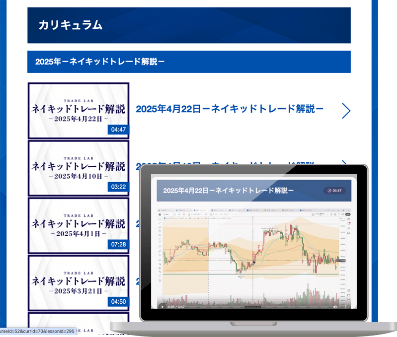 |
||||||||||||
| ロット計算ツール | ビデオ講座の中で「マネーマネジメント（資金管理）」についてお話したかと思いますが、基本的に「毎トレードごと」にポジションサイズ（ロット＝Lot）を計算してトレードすることになります。 計算式としては、ロスカット（損切り）ポイントを先に決めて、そのロスカット幅で損切りした際に「資金の何％を失うか？」という”資金率”を元に計算します。 この計算も「海外口座」と「国内口座」で違ったりしますので、意外と面倒くさかったりするのですが、そこを簡単にパッと計算してくれるツールをご用意していますので、面倒くさい計算はツールに任せてトレードに専念して頂けますので、ご安心ください。 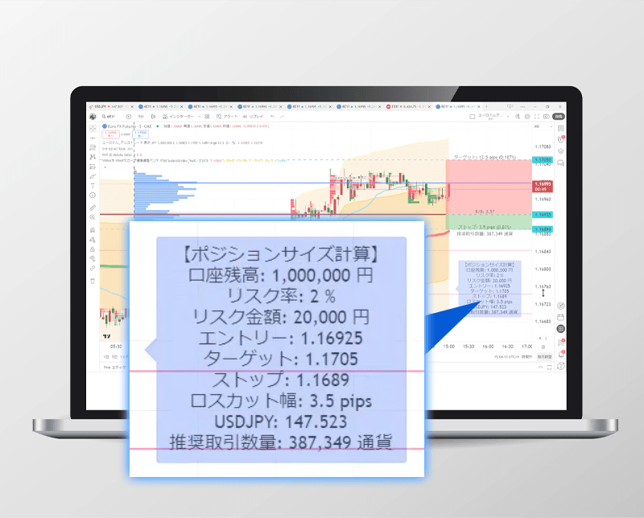 |
||||||||||||
| トレード記録システム | トレード記録はリスクコントロールで言うところの「マインド」にあたる部分で、自分自身の「特性・特徴」を理解するためにも必ず付けて頂きたい記録です。 僕自身は長らく大学ノートなどで付けてきましたが、トレLabではトレード記録を簡単につけて見返すことが出来る「トレード日記機能」をご提供しています。 こちらは次にご紹介する「トレード分析ツール」とも連動しているので、ご自身の強みや弱みを把握して、それをトレードに活かしていくことに特化した「自己育成」機能だとお考えください。 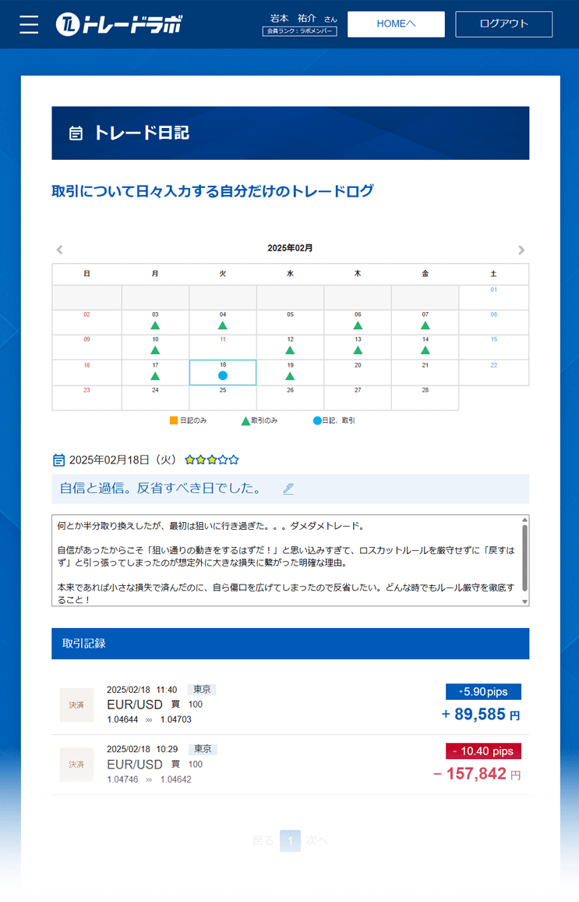 |
||||||||||||
| トレード分析ツール | 先ほどご紹介した「トレード記録」とワンセットで考えていただきたいのが「自己トレード分析」です。 あなた自身の特性として「どんな相場に強いのか？弱いのか？」「ショートが得意？ロングが得意？」「損切は早い？遅い？」など、自分自身の特徴を掴むことで裁量トレードの精度をドンドン上げていくことが出来ます。 しかしこれらの分析もエクセルやスプレッドシートでやるのは面倒だと思いますので、トレLabメンバーのあなたにはこちらのトレード分析ツールもご利用頂けるようになっています。 ちなみに余談ですが、トレードの売買記録は取引所からCSVをダウンロードしてアップロードするだけで反映されますので、チマチマ入力する必要もないので非常に簡単。 ぜひお役立てください。 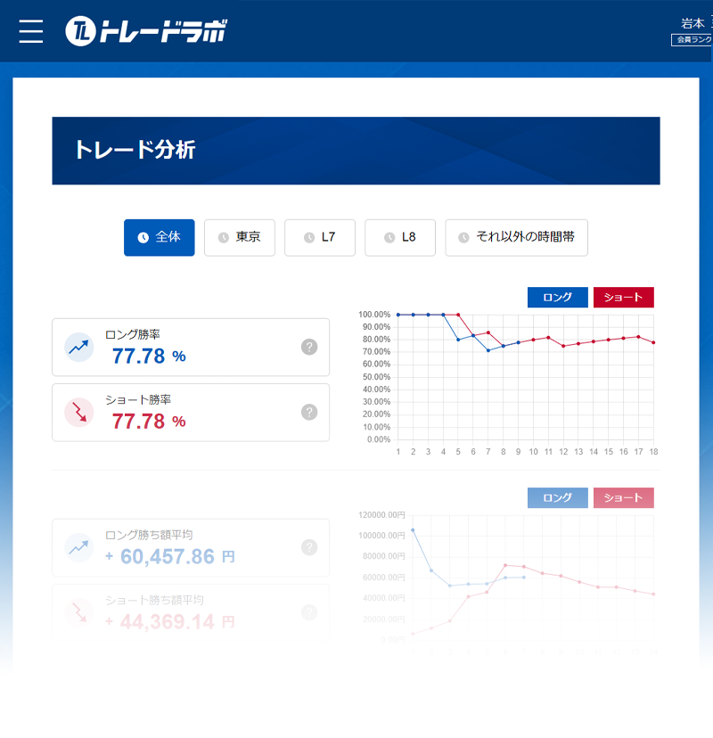 |
||||||||||||
| 各種勉強会 | トレLabでは「一緒に学ぶ」「学校のように」などの環境を重視していますので、カリキュラムを渡して「はい。おしまい」ではなく、最低でも月に１回は「勉強会」を開催します。 勉強会は実際の相場を元にネイキッドトレードを解説したり、メンバーの事例を元に一緒に考えたりなどの「実践形式」で行います。 また、会場を借りてリアルな場で行う場合と、Zoomなどのオンラインで行う場合を「混ぜながら」実施しますので、実際に会って他のメンバーとのコミュニケーションも大切にしたい人にも、オンラインで学んで黙々とやりたい人にも、どちらの場合にも対応している環境になっています。 勉強会は「最低月に１回」なので、多い月には２～３回行うこともありますし、リアルな場も東京以外の場所での開催も増やしていきたいと思っています。 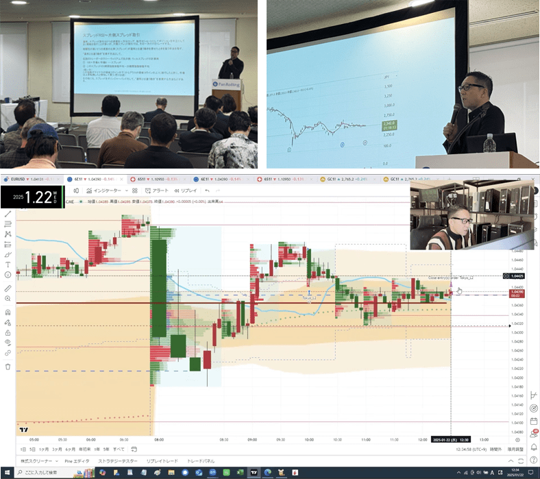 |
||||||||||||
| ライブ配信 | ライブ配信はその名の通り「ライブ」なので、リアルタイムにトレードを解説する配信を行ったり、振り返りをしたり、質疑応答の時間を作ったりさせて頂きます。 つまり、場合によっては「これから”ココで”エントリーします！」などのシーンも出てくることになるので、あなたがネイキッドトレードをマスターする上で非常に理解が進みやすく、学びのペースが早くなります。 こういった「ライブ」は多くのトレーダーが嫌がることですが、全てを賭けて取り組むと決めているトレードLabでは出し惜しみすること無く実施していきますので、ぜひあなたも使い倒してください。 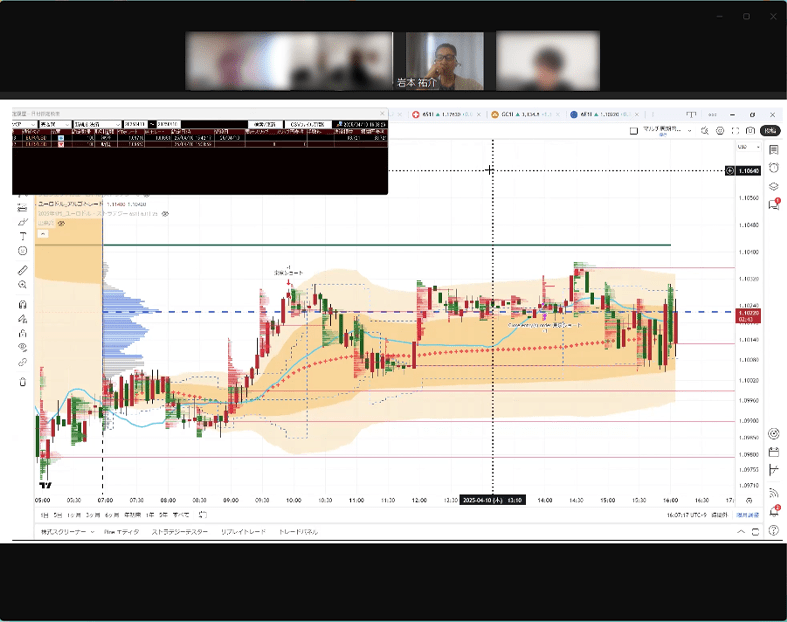 |
||||||||||||
| 電話やチャットで365日間サポート | トレラボでは「徹底したサポート」を本気の本気で実現していますので、あなたが「どうしたらいいの？」と悩み困るヒマを一切作らないように取り組んでいます！ 具体的には・・・ ・専用回線による電話サポート（午前9時から18時まで） ・LINE等によるチャットサポート（24時間お問い合わせ可） ・もちろんメールサポートも対応（24時間お問い合わせ可） ・更に専用コミュニティサポート（24時間お問い合わせ可） これらを土日祝日も含む365日体制でサポート致しますので、お正月であってもお気軽にお電話ください。 これが「脱落者ゼロ！」を真剣に掲げているトレードLabの本気です。 |
||||||||||||
| 専用コミュニティ | トレードLabではスピーディかつ活発にやり取りして頂ける、専用の「グループチャット」をご用意しています。 こちらのグループでは、未経験者から上級者までそれぞれのステージに合わせたグループから、雑談や相談、更には「結果を自慢」する為のグループから「趣味や遊び」を共有するグループまで幅広いグループがあります。 その全てに参加しても構いませんし、自分自身が集中したいグループに絞っても構いません。 「１人は皆の為に、皆は１人の為に」を地で行きながらも、全力で楽しむことも忘れない「大人のためのキャンパスライフ」をコンセプトに楽しんで運営していますので、是非あなたも積極的に活用してくださいね！ 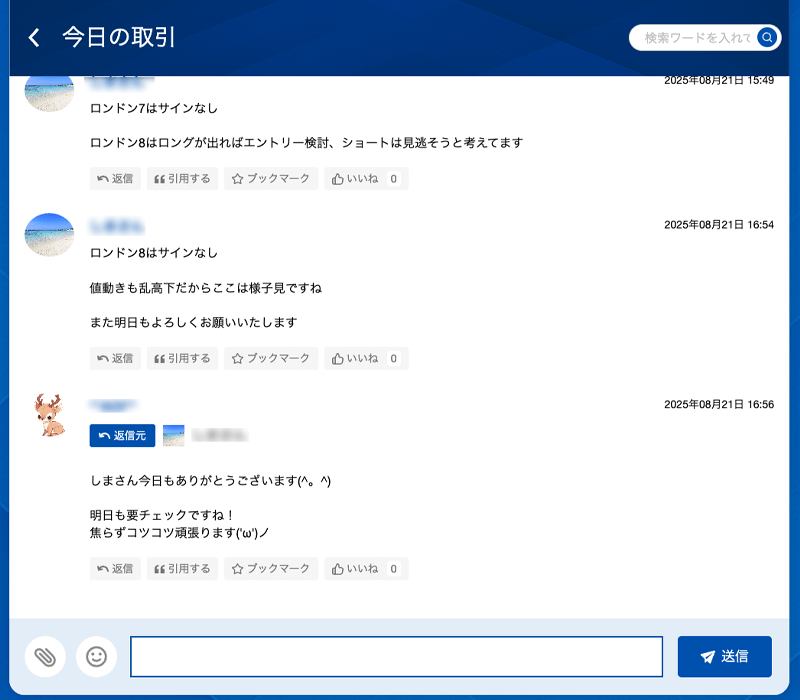 |
||||||||||||
| 各種イベント | 繰り返しお伝えしていることではありますが、トレードLabでは「トレードで稼ぐこと」は当然のこととしてサポートしていきますが、それだけではなく「改めて人生を最大限楽しむこと！」を大切にしています。 ですからトレLabとしても積極的に様々なイベントを企画していきます。 バーベキューや飲み会、僕と一緒に筋トレをやってみたり、旅行に出かけるのもいいですね。海外も様々なところを一緒に回ってみたいですし、あなたの趣味や好きなことを共有してもらえると更に嬉しいです。 他のトレLabメンバーの趣味にご一緒させてもらったりするのも、今まで知らなかった「楽しみ」との出会いにもなるかも知れません。ぜひ積極的には「楽しい」を掴みに来てくださいね！ |
||||||||||||
| トレLabメンバー専用会員ページ | ここまでご説明してきたトレードLabのパッケージ（各種コンテンツ）は、基本的には全てトレLab専用の「メンバーズページ」にてご提供しています。 また、こちらのメンバーズページは常に会員の皆様のご意見を元にバージョンアップし続けていますので、より便利で使いやすいページへと進化し続けます。 もちろん各種カリキュラムやツール、ケーススタディなんかも充実＆拡充を続けますので、あなたがネイキッドトレードをマスターして、生涯「相場（マーケット）から利益を生み続ける」という能力を手に入れる為のお手伝いを全力でやっていきます！ もちろん「楽しむこと」も忘れずに！ 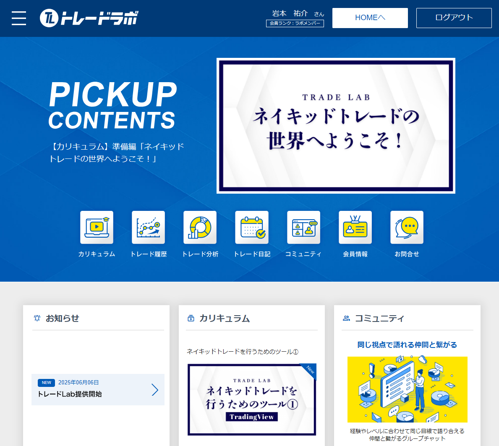 |
約2ヶ月という最初の期間はネイキッドトレードをマスターする為の学習期間です。
早い人なら1ヶ月程度でマスターできると思いますが、脱落者ゼロを掲げているので余裕をもって2ヶ月という期間を設けています。
もちろん１人で学ぶだけ・・・では決してありませんので、この期間も勉強会やイベント、リアルタイム配信やグループチャットでお会いしつつサポートさせて頂きます！
学習期間が終わった後も復習や補習を受けて頂く時間は十分確保していますし、何よりここからの約4ヶ月間は「実践期間」ですから、本当の意味でネイキッドトレードをマスターし、生涯スキルへと昇華して頂きます。
また、トレLabの「コミュニティとしての本領」もこの期間に感じて頂き、ただ学ぶだけではなく、トレードは孤独なものではなく側に僕や仲間がいる安心感や、人生を楽しむための環境がある充実感も感じて頂ければと思います。
もちろん「しっかり稼ぐ！」ということは大前提ですから、あなたが壁を感じるようなことが無いように全力でサポートさせて頂きます！
ここから先はあなたが望んで頂けたなら・・・という大前提にはなりますが、「2ヶ月＋4ヶ月＝6ヶ月間」という学習期間と実践期間を経て、あなたがトレLabと共に歩むことを「人生における価値だ！」と判断して頂けたなら・・・
その時はぜひ一緒にトレードで稼ぎ、投資で安定させ、遊びを充実させていきましょう！
もちろんトレLabに変わらず在籍頂くかどうかはその時そのタイミングで決めて頂いて構いません。
※6ヶ月後に改めて継続利用のご案内（月額990円(税込)～）をさせて頂きます。
全ての環境をそのまま継続いただく事ももちろん可能なので、是非あなたと生涯のパートナーとなれることを願っております！
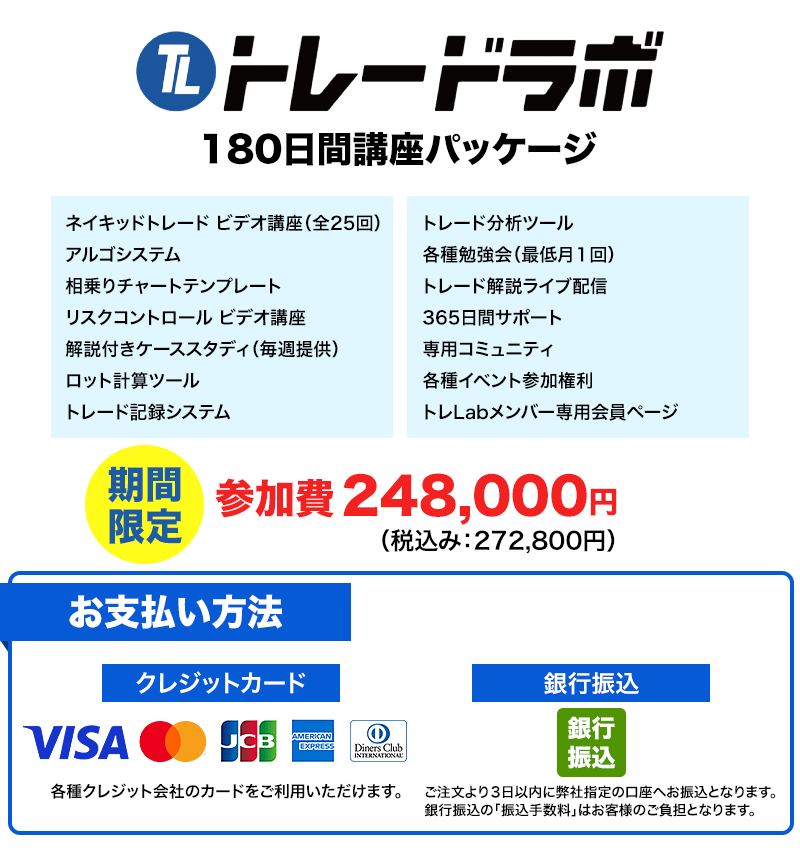
このページは期間限定の特設ページです。
※期日になりましたら募集を終了します。
です！ご不明な点があれば、
お気軽にお問い合わせください
※混雑時には繋がらない場合がございます。
時間をおいて再度おかけ直しください
このページは期間限定の特設ページです。
※期日になりましたら募集を終了します。
です！ご不明な点があれば、
お気軽にお問い合わせください
※混雑時には繋がらない場合がございます。
時間をおいて再度おかけ直しください